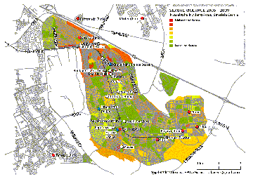

|
|

وقتی سکوت جایز نیست ؛مرکز کمک به قربانیان خشونت جنسی
لیلا راد
چهار شنبه27 مرداد 1389
تجاوز نوعی از خشونت جنسی است که از طریق رفتار جنسی اعمال می شود. به بیان دیگر، هر نوع رفتار جنسی که به شخصی تحمیل شود و یا استفاده از رفتار جنسی به عنوان تهدید برای قدرتنمایی، شامل این تعریف می شود. خشونتی که بیشترین ناراحتی های روانی را وارد می کند و می تواند زندگی فرد را برای همیشه تغییر دهد.
سی می له لا (Simelela) مرکزی است شبانه روزی برای عرضه ی خدمات و کمک های لازم به قربانیان خشونت جنسی در کیپ تاونِ آفریقای جنوبی. این مرکز با همکاری برخی سازمان های بهداشتی، پلیس و سازمان توسعه اجتماعی به منظور کمک به بهبود فیزیکی و بازپروری روحی قربانیان، در شهریور 2003 تاسیس شد.
هدف آن اینگونه تعریف شده است: راهکار منظم و چند کاره که پاسخگوی آسیب های جسمی، روحی و اجتماعی و پیشگیری قانونی از بروز خشونت جنسی باشد. و از بین بردن تصورات غلط ناشی از این معضل که دامن قربانی و خشونت کننده هر دو را می گیرد، برای ریشه کنی این نوع ابراز خشونت به طور کامل.
به زودی مشخص شد که برای رسیدن به هدف، به برنامه ای جامع تر نیاز است. به همین منظور همکاری گسترش یافت و از سال گذشته در قالب یک پروژه با سازمان موزاییک [1]، سازمان با سابقه ای علیه خشونت بر زنان، ترکیب شد. دامنه ی همکاری ها به سازمان بین المللی رسیدگی به خشونت های جنسی هم رسید.
راهکارها
به قربانی تجاوز توصیه می شود به نزدیک ترین ایستگاه پلیس به محل واقعه، مراجعه کند. و قبل از مراجعه به پلیس از استحمام و عوض کردن لباس هایش خودداری کند. یک تار مو، یک قطره خون و یا هر نشانه ای می تواند مدرکی از جرم باشد. مرکز سی می له لا در تمام طول سال و به طور شبانه روزی آماده ی کمک به زنان، کودکان و مردان مراجعه کننده است. خدمات این مرکز شامل موارد زیر است:
مراقبت بهداشتی اورژانسی : شامل گواهی پزشکی جهت ارائه به دادگاه، پیشگیری از بارداری اضطراری، آزمایش داوطلبانه ی ایدز،...
مراقبت های بعدی: آزمایش بارداری در شش هفته، آزمایش ایدز در هفته ی 6 تا 12، ارجاع بیماران HIV مثبت به مراکز مرتبط،...
حمایت روانی: مشاوره ی اولیه، مشاوره قبل و بعد از آزمایش ایدز، مشاوره ی مخصوص کودکان و نوجوانان،...
مراقبت از کودکان: مشاوره ی مخصوص کودکان، مراقبت های مخصوص پزشکی، اتاق های بازی، ...
حمایت قانونی: ثبت DNA متجاوز در مرکز پزشکی، کمک پلیس، ارجاع به سازمان های قانونی برای کمک های بیشتر
آگاهی، آموزش، پیشگیری: استفاده از رسانه های جمعی (بیشتر رادیو و روزنامه ی محلی) برای آگاهی رسانی،
کمپین های چهره به چهره برای گفت و گو با مردان و تشویق آن ها به مبارزه علیه خشونت جنسی و مسئولیت پذیری،
مراجعه ی اعضای مرکز به مدارس و سایر اجتماعات و معرفی اهداف و خدمات،

پیشگیری بهتر از درمان
اغلب تصور می شود تجاوز توسط غریبه ها و در اماکن دور از دسترس اتفاق می افتد. در حالیکه بیشترین آمار تجاوز در خانه ها و توسط افراد آشنا به قربانی صورت می گیرد. سازمان بحران تجاوز در همکاری با سی می له لا، دستور العملی به منظور پیشگیری و دفاع از خود دارد که شامل سه مرحله است:
1. بیرون از خانه: سعی کنید در گروه های چند نفره با دوستان تان پیاده روی کنید/ خوراکی و نوشیدنی از غریبه ها قبول نکنید./ از غریبه ها کمک قبول نکنید. حتی اگر کسی مدعی شد دوست شما را می شناسد./ یک اسپری فلفل با خود داشته باشید یا یک سوت کوچک یا هر وسیله ای که در صورت حمله بتوانید از خود دفاع کنید یا کمک بخواهید.
2. در خانه: همیشه در را قفل کنید./ یک سیستم امنیتی در خانه داشته باشید که در صورت لزوم با آژیر همسایه ها را خبر کند./ اگر در راه بازگشت به خانه فکر می کنید کسی در تعقیب شماست به خانه ی یکی از همسایه ها بروید و یا کمک بخواهید. تنها به خانه نروید.
3. در جاده: درهای ماشین را وقت رانندگی قفل کنید./ به تنهایی سوار ماشین های شخصی نشوید./ مطمئن شوید که ماشین یا تاکسی مسیر درست را طی می کند./
سکوت، نشانه ی ترس
اما برتر از همه ی این ها، شناساندن موضوع برای کمک به افراد است. گاهی قربانیان تجاوز نگران این هستند که خود مقصر شناخته شوند و یا می ترسند در صورت بیان موضوع دوباره مشکلی برایشان پیش بیاید. و یا گاهی کودک یا نوجوان قربانی به قدری از اتفاقی که برایش افتاده ناآگاه است که نمی داند به چه کسی بگوید و به کجا مراجعه کند.
شناساندن موضوع و ترغیب قربانیان به مراجعه به مراکز درمانی علاوه بر کمک شخصی به سایر افراد هم کمک می کند تا سکوت ضرربار خود را کنار بگذارند.
برای همین هم شعار سازمان بحران تجاوز این است: سکوت را بشکنید.
لینک های مرتبط :
http://mosaic.org.za